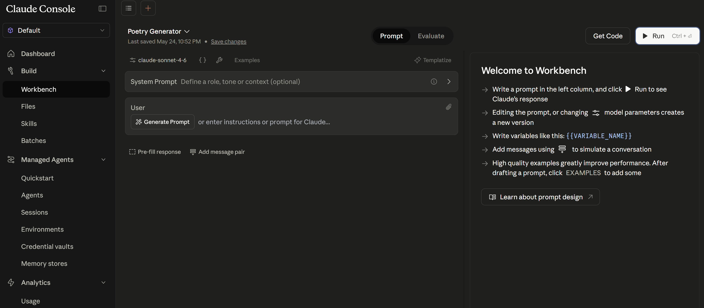
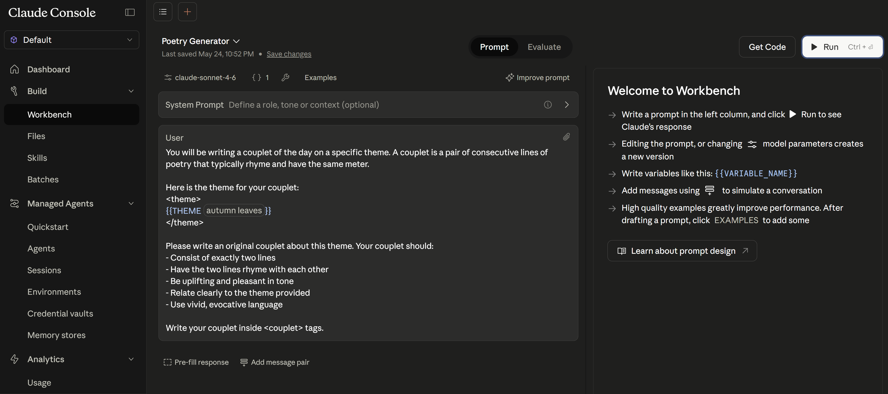
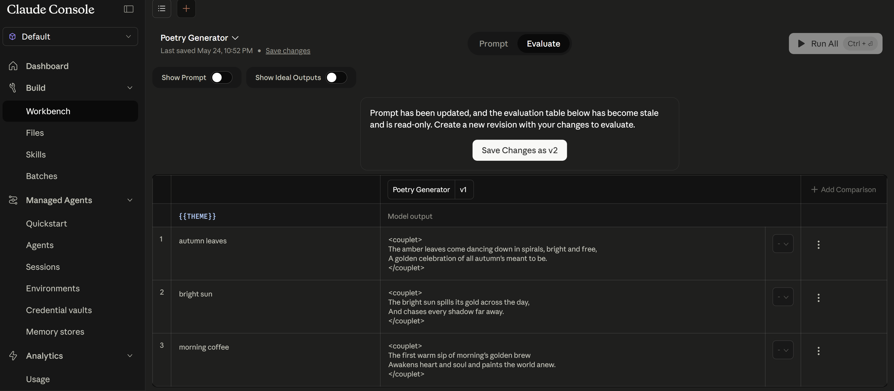
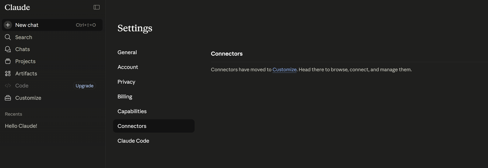
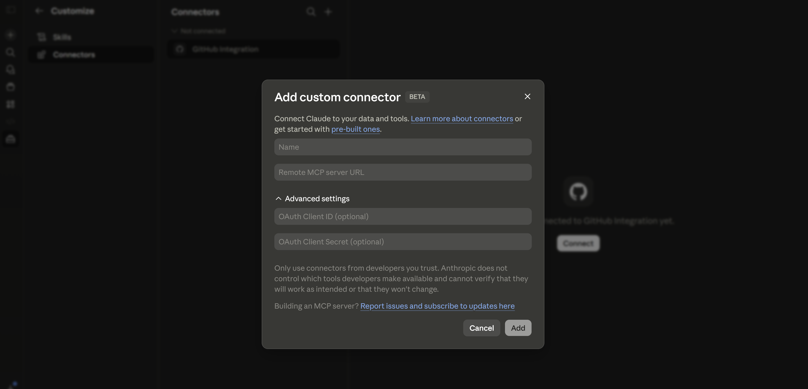

1. Anthropic Platform Overview
The Anthropic platform provides access to Claude models through a straightforward API. Unlike multi-layered organizational hierarchies, Anthropic uses a flat structure: your account holds API keys, each with workspace-level access. The Console at console.anthropic.com is your control plane for key management, usage monitoring, and model access.
1.1 Console & API Keys
The Anthropic Console is where you create and manage API keys, monitor usage, set spending limits, and prototype with the Workbench. Each API key is scoped to a workspace and can be revoked independently.
flowchart TD
A["Anthropic Account"] --> B["Workspace"]
B --> C["API Key: production"]
B --> D["API Key: development"]
B --> E["API Key: ci-pipeline"]
C --> F["Rate Limits & Usage"]
D --> F
E --> F
B --> G["Console Workbench"]
B --> H["Usage Dashboard"]
| Concept | Purpose | Key Actions |
|---|---|---|
| Account | Top-level entity (individual or org) | Manage billing, spending limits |
| Workspace | Isolated environment for teams | Separate keys, usage tracking |
| API Key | Authentication credential | Create, rotate, revoke per workspace |
| Workbench | Console prompt playground | Prototype prompts, test tools |
1.2 Model Families & Versioning
Anthropic organizes models into families optimized for different tradeoffs between capability, speed, and cost. As of May 2026, the most relevant first-party model families for new Claude API work are Opus 4.8, Sonnet 4.6, and Haiku 4.5.
| Model | Strengths | Context | Best For |
|---|---|---|---|
| Claude Opus 4.8 | Highest capability, strongest long-horizon reasoning | Up to 1M | Research, complex analysis, high-autonomy coding |
| Claude Sonnet 4.6 | Best balance of speed and intelligence | Up to 1M | Production workloads, agents, coding, general tasks |
| Claude Haiku 4.5 | Fastest, lowest cost | 200K | Classification, routing, summarization, simple extraction |
claude-sonnet-4-6) that are pinned snapshots — not rolling aliases. Older model families still use dated snapshot IDs and convenience aliases. Always verify the currently active IDs in the models overview before changing production defaults.
Here is a minimal example showing how to pin a model version and make your first API call:
import anthropic
# Pin to a specific model version for production stability
client = anthropic.Anthropic()
# Production: pinned version
response = client.messages.create(
model="claude-sonnet-4-6",
max_tokens=1024,
messages=[{"role": "user", "content": "Hello, Claude!"}]
)
print(response.content[0].text)
1.3 Service Tiers & Rate Limits
Anthropic applies rate limits per-workspace based on your usage tier. Limits are measured in requests per minute (RPM), tokens per minute (TPM), and tokens per day (TPD). Higher tiers unlock greater throughput as you build usage history and increase spending.
| Tier | Requirement | RPM | TPM (Input) | TPD (Input) |
|---|---|---|---|---|
| Tier 1 | Credit purchase ($5+) | 50 | 40,000 | 1,000,000 |
| Tier 2 | $40+ spend, 7+ days | 1,000 | 80,000 | 2,500,000 |
| Tier 3 | $200+ spend, 30+ days | 2,000 | 160,000 | 5,000,000 |
| Tier 4 | $400+ spend, 60+ days | 4,000 | 400,000 | 50,000,000 |
2. SDK Installation
Anthropic provides official SDKs for Python and TypeScript. Both are fully typed, support streaming, and include built-in retry logic with exponential backoff.
2.1 Python SDK
The Python SDK (anthropic) is the primary SDK for server-side applications, data pipelines, and agent systems. It supports both synchronous and asynchronous usage patterns.
# Install the Anthropic Python SDK
pip install anthropic
# Or with optional dependencies for streaming
pip install anthropic[streaming]
# Verify installation
python -c "import anthropic; print(anthropic.__version__)"
Once installed, initialize the client and make your first request. The SDK reads your API key from the ANTHROPIC_API_KEY environment variable by default:
import anthropic
# The SDK reads ANTHROPIC_API_KEY from environment by default
client = anthropic.Anthropic()
# Or pass the key explicitly (not recommended for production)
client = anthropic.Anthropic(api_key="sk-ant-api03-...")
# Make your first API call
message = client.messages.create(
model="claude-sonnet-4-6",
max_tokens=1024,
messages=[
{"role": "user", "content": "What is the Anthropic API?"}
]
)
print(message.content[0].text)
print(f"Usage: {message.usage.input_tokens} in, {message.usage.output_tokens} out")
2.2 TypeScript SDK
The TypeScript SDK provides the same functionality with full type safety. It works in Node.js, Deno, and edge runtimes (Cloudflare Workers, Vercel Edge).
# Install the Anthropic TypeScript SDK
npm install @anthropic-ai/sdk
# Or with yarn/pnpm
yarn add @anthropic-ai/sdk
pnpm add @anthropic-ai/sdk
After installation, create a client instance and make a request. The TypeScript SDK mirrors the Python SDK’s interface:
import Anthropic from "@anthropic-ai/sdk";
// Reads ANTHROPIC_API_KEY from environment
const client = new Anthropic();
async function main() {
const message = await client.messages.create({
model: "claude-sonnet-4-6",
max_tokens: 1024,
messages: [
{ role: "user", content: "What is the Anthropic API?" }
]
});
console.log(message.content[0].text);
console.log(`Usage: ${message.usage.input_tokens} in, ${message.usage.output_tokens} out`);
}
main();
2.3 API Key Management
API keys should never be hardcoded or committed to version control. Use environment variables or a secrets manager for all environments.
# Set the API key as an environment variable
export ANTHROPIC_API_KEY="sk-ant-api03-your-key-here"
# For production: use a secrets manager
# AWS Secrets Manager, Azure Key Vault, GCP Secret Manager, HashiCorp Vault
For production deployments, load the API key programmatically from a secrets manager rather than relying on environment variables:
import os
import anthropic
# Best practice: let the SDK read from environment
client = anthropic.Anthropic() # reads ANTHROPIC_API_KEY automatically
# Alternative: load from a secrets manager
def get_api_key():
"""Load API key from your secrets provider."""
# Example: AWS Secrets Manager
# import boto3
# client = boto3.client('secretsmanager')
# response = client.get_secret_value(SecretId='anthropic-api-key')
# return response['SecretString']
return os.environ["ANTHROPIC_API_KEY"]
client = anthropic.Anthropic(api_key=get_api_key())
sk-ant-api03-. If you accidentally expose a key, revoke it immediately in the Console and generate a new one. Use separate keys for development, staging, and production so compromised dev keys don’t affect prod.
Building a Customer FAQ Bot
A startup used Claude to build a FAQ bot that reduced support tickets by 40%. Key patterns: system prompts for consistent tone, temperature=0 for deterministic answers, and structured output for ticket routing. The team started with claude-haiku for speed during prototyping, then upgraded to claude-sonnet for production where answer quality mattered more than latency.
3. Client Configuration
3.1 Sync vs Async Clients
The Python SDK provides both synchronous (Anthropic) and asynchronous (AsyncAnthropic) clients. Use async for high-concurrency applications (web servers, agent systems) and sync for scripts and notebooks.
import anthropic
import asyncio
# Synchronous client — for scripts, notebooks, simple applications
sync_client = anthropic.Anthropic()
response = sync_client.messages.create(
model="claude-sonnet-4-6",
max_tokens=512,
messages=[{"role": "user", "content": "Hello!"}]
)
print(f"Synchronous response: {response.content[0].text}")
# Asynchronous client — for web servers, high-concurrency workloads
async_client = anthropic.AsyncAnthropic()
async def generate_response(prompt: str) -> str:
response = await async_client.messages.create(
model="claude-sonnet-4-6",
max_tokens=512,
messages=[{"role": "user", "content": prompt}]
)
return response.content[0].text
# Run multiple requests concurrently (Jupyter/IPython compatible)
async def main():
prompts = ["Summarize AI safety", "Explain RAG", "Define MCP"]
results = await asyncio.gather(*[generate_response(p) for p in prompts])
for prompt, result in zip(prompts, results):
print(f"Asynchronous response for : {prompt} -> \n {result[:80]}...\n")
await main()
3.2 Beta Headers
Some Anthropic features are released as betas. Access them by passing the anthropic-beta header or using the SDK’s beta interface. Beta features may change without notice, so pin versions and test thoroughly.
import anthropic
client = anthropic.Anthropic()
# Access beta features via the betas namespace
# Example: using prompt caching (beta)
response = client.beta.messages.create(
model="claude-sonnet-4-6",
max_tokens=1024,
betas=["prompt-caching-2024-07-31"],
system=[{
"type": "text",
"text": "You are a helpful assistant.",
"cache_control": {"type": "ephemeral"}
}],
messages=[{"role": "user", "content": "What features are in beta?"}]
)
print(f"What features are in beta?: {response.content[0].text}")
# Or pass headers directly for raw API access
response = client.messages.create(
model="claude-sonnet-4-6",
max_tokens=1024,
extra_headers={"anthropic-beta": "max-tokens-3-5-sonnet-2024-07-15"},
messages=[{"role": "user", "content": "Hello!"}]
)
print(f"Hello!: {response.content[0].text}")
3.3 Region Configuration
Anthropic provides regional API endpoints for data residency and latency optimization. Configure the base URL to route requests to a specific region.
import anthropic
# Default: US region (api.anthropic.com)
client = anthropic.Anthropic()
# EU region for data residency requirements
eu_client = anthropic.Anthropic(
base_url="https://api.eu.anthropic.com"
)
# Custom base URL (e.g., for proxy or gateway)
proxied_client = anthropic.Anthropic(
base_url="https://your-gateway.company.com/anthropic"
)
# Verify configured endpoints
print(f"US client base URL: {client.base_url}")
print(f"EU client base URL: {eu_client.base_url}")
print(f"Proxy client base URL: {proxied_client.base_url}")
4. Error Handling & Retries
Production applications must handle API errors gracefully. The Anthropic SDK provides typed exception classes and built-in retry logic with exponential backoff for transient failures.
4.1 Error Types
| Exception | HTTP Code | Cause | Action |
|---|---|---|---|
AuthenticationError | 401 | Invalid or expired API key | Check/rotate key |
PermissionDeniedError | 403 | Key lacks required permissions | Check workspace access |
NotFoundError | 404 | Invalid model or endpoint | Verify model name |
RateLimitError | 429 | Too many requests | Back off, retry with delay |
APIStatusError | 500+ | Server error | Retry with backoff |
APIConnectionError | — | Network failure | Check connectivity, retry |
APITimeoutError | — | Request timed out | Increase timeout or retry |
Here is a comprehensive error-handling pattern covering all exception types with appropriate recovery actions:
import anthropic
client = anthropic.Anthropic()
try:
response = client.messages.create(
model="claude-sonnet-4-6",
max_tokens=1024,
messages=[{"role": "user", "content": "Hello!"}]
)
print(response.content[0].text)
except anthropic.AuthenticationError as e:
print(f"Authentication failed: {e.message}")
# Action: check API key, rotate if needed
except anthropic.RateLimitError as e:
print(f"Rate limited: {e.message}")
# Action: the SDK retries automatically, but you may want custom logic
# Check response headers: retry-after, x-ratelimit-limit-requests
except anthropic.APIStatusError as e:
print(f"API error {e.status_code}: {e.message}")
# Action: log and retry for 5xx, don't retry for 4xx
except anthropic.APIConnectionError as e:
print(f"Connection error: {e.message}")
# Action: check network, retry with backoff
except anthropic.APITimeoutError as e:
print(f"Request timed out: {e.message}")
# Action: increase timeout or reduce max_tokens
4.2 Retry Strategies
The Anthropic SDK includes built-in retry logic with exponential backoff for transient errors (429, 5xx, connection errors). You can configure the maximum number of retries and customize the behavior.
import anthropic
# Default: 2 retries with exponential backoff
client = anthropic.Anthropic(max_retries=2)
# Increase retries for critical production workloads
resilient_client = anthropic.Anthropic(max_retries=5)
# Disable automatic retries (handle manually)
no_retry_client = anthropic.Anthropic(max_retries=0)
For more sophisticated retry logic, implement custom backoff with jitter. Exponential backoff doubles the wait time after each failure (1s → 2s → 4s → 8s), preventing thundering herd problems — a scenario where many clients fail simultaneously (e.g., after a brief API outage), then all retry at the same fixed interval, flooding the server with a synchronized burst that causes it to fail again. Jitter adds randomness to the delay so that multiple clients hitting a rate limit don’t all retry at the exact same moment, spreading the load over time instead of concentrating it:
import anthropic
import time
import random
def call_with_retry(client, max_attempts=5, base_delay=1.0, **kwargs):
"""Custom retry with exponential backoff and jitter."""
for attempt in range(max_attempts):
try:
return client.messages.create(**kwargs)
except anthropic.RateLimitError:
if attempt == max_attempts - 1:
raise
delay = base_delay * (2 ** attempt) + random.uniform(0, 1)
print(f"Rate limited. Retrying in {delay:.1f}s (attempt {attempt + 1})")
time.sleep(delay)
except anthropic.APIStatusError as e:
if e.status_code >= 500 and attempt < max_attempts - 1:
delay = base_delay * (2 ** attempt)
time.sleep(delay)
else:
raise
client = anthropic.Anthropic(max_retries=0) # disable built-in retries
response = call_with_retry(
client,
model="claude-sonnet-4-6",
max_tokens=1024,
messages=[{"role": "user", "content": "Hello!"}]
)
print(f"Response: {response.content[0].text}")
4.3 Timeout Configuration
Configure timeouts based on your use case. Long-running requests (extended thinking, large outputs) need higher timeouts than simple classification tasks.
import anthropic
import httpx
# Default timeout: 10 minutes
client = anthropic.Anthropic()
# Custom timeout for all requests
client = anthropic.Anthropic(
timeout=httpx.Timeout(300.0, connect=5.0) # 5s connect, 300s total
)
# Per-request timeout override
response = client.messages.create(
model="claude-sonnet-4-6",
max_tokens=4096,
messages=[{"role": "user", "content": "Write a detailed essay..."}],
timeout=600.0 # 10 minutes for this specific request
)
5. Production Checklist
Before deploying your Claude-powered application to production, verify these configurations:
Deployment Checklist
- API Key Security — Key stored in secrets manager, not environment variables or code
- Model Pinning — Using versioned model ID (not
-latestalias) - Error Handling — All exception types caught with appropriate recovery actions
- Rate Limit Awareness — Know your tier limits; implement backoff and queuing
- Timeout Configuration — Timeouts set appropriate to use case (not default)
- Retry Logic — max_retries configured; custom logic for critical paths
- Logging — Request IDs logged for debugging with Anthropic support
- Cost Monitoring — Usage dashboard alerts set; per-request token tracking
- Separate Keys — Different keys for dev, staging, production
- Region Selection — Correct region for data residency and latency needs
import anthropic
import httpx
import logging
# Production-ready client configuration
logger = logging.getLogger(__name__)
def create_production_client() -> anthropic.Anthropic:
"""Create a production-configured Anthropic client."""
return anthropic.Anthropic(
# Key loaded from secrets manager (SDK reads ANTHROPIC_API_KEY)
max_retries=3,
timeout=httpx.Timeout(
timeout=120.0, # 2 min total timeout
connect=5.0 # 5s connection timeout
),
)
def safe_generate(client: anthropic.Anthropic, prompt: str) -> str:
"""Generate a response with comprehensive error handling."""
try:
response = client.messages.create(
model="claude-sonnet-4-6",
max_tokens=2048,
messages=[{"role": "user", "content": prompt}]
)
logger.info(
"Request succeeded",
extra={
"request_id": response.id,
"input_tokens": response.usage.input_tokens,
"output_tokens": response.usage.output_tokens,
"model": response.model,
"stop_reason": response.stop_reason,
}
)
print(f"Request succeeded. extras: \n"+
f"request_id: {response.id}\n"+
f"input_tokens: {response.usage.input_tokens}\n"+
f"output_tokens: {response.usage.output_tokens}\n"+
f"model: {response.model}\n"+
f"stop_reason: {response.stop_reason} \n"
)
return response.content[0].text
except anthropic.RateLimitError:
logger.warning("Rate limited — request will be retried by SDK")
raise
except anthropic.APIStatusError as e:
logger.error(f"API error: {e.status_code} - {e.message}")
raise
except anthropic.APIConnectionError:
logger.error("Connection failed — check network")
raise
# Demo: create client and generate a response
client = create_production_client()
result = safe_generate(client, "What is exponential backoff?")
print(f"Response: {result[:120]}...")
claude-haiku-4-5 for speed. Then modify it to return the haiku in JSON format with fields for lines 1, 2, and 3. Bonus: add error handling for rate limits.
6. Console Prototyping (CCA 0.2)
Before writing code, the Anthropic Console (console.anthropic.com) lets you prototype prompts, test tool schemas, and configure agents interactively. Think of it as a playground for experimentation — you can iterate on system prompts 10x faster in the Console than in code because there’s no deploy cycle.
Analogy: The Console is like a REPL for AI development. Just as you wouldn’t write a complex Python script without first testing ideas in the REPL, you shouldn’t write production agent code without first validating your approach in the Console.
6.1 Workbench & Agent Setup
When you first open the Workbench, it shows a clean interface with guidance on getting started — write a prompt, click Run, and see Claude’s response immediately:

{{VARIABLE_NAME}} syntax, and click Run.Here’s a real example: a Poetry Generator prompt using a {{THEME}} variable. Notice how the prompt is structured with clear constraints and output format, and the response appears instantly in the right panel:

{{THEME}} variable. Claude produces a couplet about “autumn leaves” in real time. Use Get Code (top right) to export as Python/TypeScript.
flowchart TD
subgraph Console["Anthropic Console"]
PE[Prompt Editor
Write & test system prompts]
TT[Tool Tester
Define schemas, see tool calls]
AB[Agent Builder
Configure multi-tool agents]
EV[Evaluation Tool
Run test cases against prompts]
end
subgraph Workflow["Development Pipeline"]
S1["Step 1: Prototype
Try prompts, test inputs,
iterate until correct"]
S2["Step 2: Export to Code
Python / TypeScript / curl
snippets auto-generated"]
S3["Step 3: Production Features
Error handling, streaming,
caching, integration"]
end
Console --> S1
S1 --> S2
S2 --> S3
subgraph Extras["Also Available"]
MCP[MCP Connector]
VH[Version History]
TS[Team Sharing]
CE[Cost Estimation]
end
Key Console URLs:
console.anthropic.com/workbench— Prompt playgroundconsole.anthropic.com/settings— API keys and org settingsconsole.anthropic.com/usage— Token usage dashboardconsole.anthropic.com/agents— Agent configuration
6.2 Console Evaluation Tool
Switch to the Evaluate tab to run your prompt against multiple test inputs simultaneously. Each row tests a different variable value, and you can compare outputs, add scoring, and export results:

flowchart LR
A["Define Test Cases
(input + expected behavior)"] --> B["Run All Cases
Against Current Prompt"]
B --> C{"All Pass?"}
C -->|Yes| D["Export to JSON
for CI/CD Pipeline"]
C -->|No| E["Review Failures
+ Response Details"]
E --> F["Iterate on Prompt"]
F --> B
# Test case format in Console:
console_test_cases = [
{
"name": "Billing classification",
"user_message": "I was charged twice for my subscription",
"expected": {
"tool_called": "classify_ticket",
"category": "billing",
"confidence_above": 0.8
}
},
{
"name": "Ambiguous — should trigger low confidence",
"user_message": "I have a question about my account and also a tech issue",
"expected": {
"tool_called": "classify_ticket",
"confidence_below": 0.7 # Should trigger human review
}
},
{
"name": "Out-of-scope rejection",
"user_message": "What's the weather like today?",
"expected": {
"contains": "I can only help with",
"tool_called": None # Should NOT call any tool
}
}
]
# Console eval features:
# - Batch run: test all cases at once
# - Comparison mode: run same cases on two different prompts (A/B)
# - Cost tracking: see total tokens used for the eval suite
# - Export: download test cases as JSON (import into CI/CD evals)
- Console Workbench is for prototyping BEFORE writing code. The exam tests whether you know the correct workflow order: prototype in Workbench first, validate behaviour interactively, then export to SDK code. A question might present a scenario where a developer jumps straight to coding — the correct answer is “use the Console first to iterate faster.” The Workbench provides a zero-deploy-cycle feedback loop that makes prompt engineering 10x faster than code-test-deploy cycles.
- Console Workbench tool tester lets you define tool schemas and see how Claude calls them. The
{ }button in the Workbench lets you define JSON tool schemas and observe exactly what JSON Claude generates for tool calls — without writing any client code. You manually provide mock responses to simulate the tool. This is distinct from claude.ai Connectors (see Section 6.3 below), which connect to live remote MCP servers. - Console eval tool generates test cases exportable to CI/CD. You can define input/expected-output pairs in the Console, run them interactively, then export as JSON. That exported JSON feeds directly into your CI/CD evaluation pipeline (covered in Part 9). The key insight: Console evals are a starting point, not a replacement for automated evals — they bootstrap your golden dataset.
- Version history allows rolling back system prompt changes. Every edit to a system prompt in the Console is versioned. If a new prompt degrades performance, you roll back to the previous version instantly. Exam questions test this as a safety mechanism: “How do you recover from a prompt regression?” → Answer: Console version history (not manually reverting code commits).
6.3 claude.ai Connectors (Remote MCP Testing)
While the Console Workbench lets you test tool schemas, claude.ai Connectors let you connect Claude to live remote MCP servers — so you can test actual tool execution end-to-end. This feature is at claude.ai/customize/connectors (not in the developer Console).


7. Models API (CCA 0.3)
The Models API lets you programmatically discover which models are available, their capabilities, and pricing — instead of hardcoding model names. This is essential for production systems that need to adapt when new models launch or old ones are deprecated.
7.1 List & Get Models
import anthropic
client = anthropic.Anthropic()
# LIST available models — GET /v1/models
models = client.models.list()
for model in models.data:
print(f"{model.id}: {model.display_name} (max output: {model.max_tokens})")
# Example output (as of May 2026, abbreviated):
# claude-opus-4-8: Claude Opus 4.8 (max output: 128000)
# claude-sonnet-4-6: Claude Sonnet 4.6 (max output: 64000)
# claude-haiku-4-5-20251001: Claude Haiku 4.5 (max output: 64000)
# ...
# NOTE: client.models.get() does NOT exist in the SDK.
# To find a specific model, filter from the list:
target_id = "claude-sonnet-4-6"
match = next((m for m in models.data if m.id == target_id), None)
if match:
print(f"\nFound: {match.display_name}")
print(f" Max output: {match.max_tokens} tokens")
print(f" ID: {match.id}")
| Format | Example | Behaviour | Use When |
|---|---|---|---|
| Pinned dateless snapshot (4.6+) | claude-sonnet-4-6 | Frozen to a specific release even without a date suffix | Production and general use on Claude 4.6+ families |
| Legacy alias (pre-4.6) | claude-sonnet-4-5 | Convenience pointer that resolves to a dated snapshot | Development or legacy migrations where automatic pointer behavior is acceptable |
| Dated snapshot (pre-4.6) | claude-sonnet-4-5-20250929 | Frozen to a specific historical release | Legacy production workloads that must stay on an older exact version |
claude-sonnet-4-6). For older families, prefer dated snapshots in production instead of convenience aliases. Re-check the model-versioning docs before adopting a new family, because the naming rules changed starting with 4.6.
7.2 Capability-Based Model Selection
Each model family trades off capability, speed, and cost. As of May 2026, choose the cheapest current model that meets your task requirements — don’t default to the most capable model for every request.
| Model | Vision | Tools | Thinking | Max Output | Context | Best For | Cost |
|---|---|---|---|---|---|---|---|
claude-opus-4-8 | 128K | 1M | Complex reasoning, high-autonomy coding, architecture | $$$ | |||
claude-sonnet-4-6 | 64K | 1M | Coding, analysis, general tasks | $$ | |||
claude-haiku-4-5 | 64K | 200K | Classification, routing, extraction | $ |
flowchart LR
TASK{"Task Type?"} -->|"Classification
Routing
Extraction
Summarization"| H["Haiku
Fast · Cheap · Sufficient"]
TASK -->|"Coding
Analysis
Conversation"| S["Sonnet
Balanced · Default choice"]
TASK -->|"Architecture
Research
Complex reasoning"| O["Opus + Thinking
Maximum quality"]
style H fill:#3B9797,color:#fff
style S fill:#16476A,color:#fff
style O fill:#132440,color:#fff
Next in the SDK Track
In Part 2: Messages API & Content Blocks, we’ll explore the Messages API in depth — system prompts as a separate parameter, content block architecture (TextBlock, ToolUseBlock, ToolResultBlock, ThinkingBlock), streaming events, stop_reason handling, and token counting.